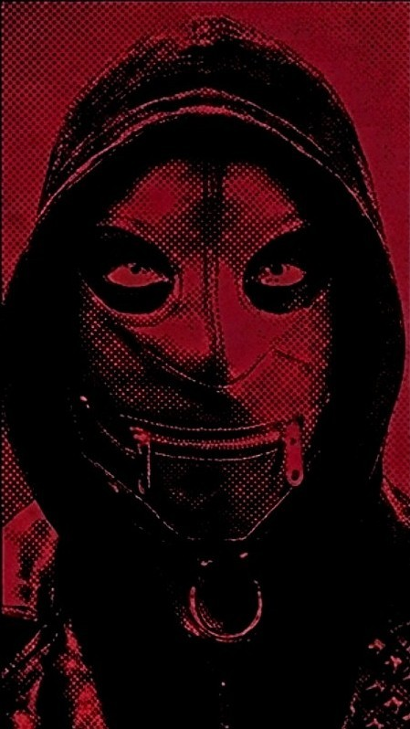

| TITLE | BPM | KEY | TACTICAL DEFINITION |
|---|---|---|---|
| Ruins with Suski Imortella |
168 | E minor | Harsh dark electro / Darksynth bass. |
| Return To Recinder | 150 | C major | Driving EBM bass, martial coldwave banger. |
| HeadBlock | 154 | A minor | Cinematic darkwave goth. |
| <Function> _disconnect() ; |
151 | E minor | A suffocating slab of industrial electronics, Brutalist anthem for the socially engineered. |
| UnDread | 150 | E minor | Motorik Hallowave. File under Post-Punk / Darkwave. |
| gravebox. | 140 | E minor. | A dirge you can dance to. 90s UK club goth. |
